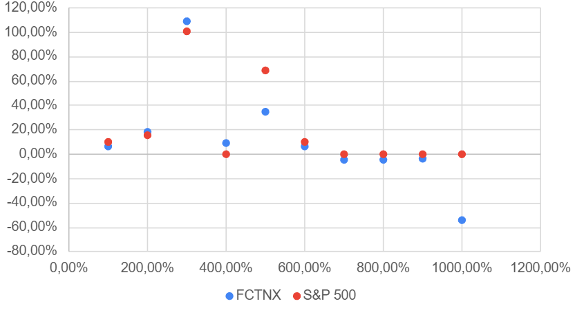
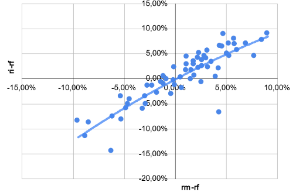
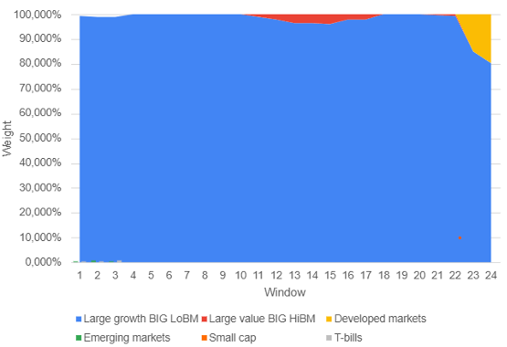
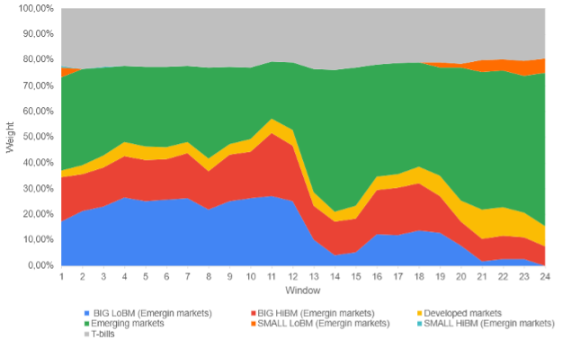
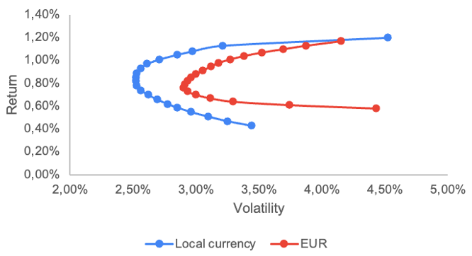

What separates a skilled active manager from an expensive passive index? This post walks through five distinct empirical analyses — from a mutual fund's closet indexing to single-stock factor betas — that together paint a comprehensive picture of how performance is really generated (or destroyed) in modern portfolio management.
This post presents the findings of a group assignment completed for the Financial Economics (EM5021) course, as part of the Master's programme at Ca' Foscari University of Venice (A.Y. 2025/2026). The work was carried out jointly with Laura Capra and Giorgia Tessari, under the group name GIORILA Financial Economics. The assignment covers five interconnected analyses spanning performance attribution, style analysis, hedge fund dynamics, international currency risk, and single-stock factor modelling — all grounded in real market data and established financial theory.
1a — Active Management vs. Closet Indexing: Fidelity Contrafund
The analysis starts with Fidelity Contrafund (FCNTX), one of the most widely held actively managed US equity funds, evaluated over a 60-month horizon against the S&P 500 benchmark.
CAPM Performance Diagnostics
A first look at the returns already raises a red flag: the fund delivered an annualized average return of 9.40%, significantly trailing the benchmark's 13.24%. The gap is amplified on a risk-adjusted basis, with the fund's Sharpe Ratio standing at 34% — exactly half the S&P 500's 68%. Applying the CAPM Single Index Model reveals a Beta of 1.083 (a slightly more aggressive stance than the market) and an annualized Jensen's Alpha of -4.68%. This deeply negative alpha represents a clear destruction of value: the manager's active decisions have consistently detracted from what could have been achieved through simple passive exposure.
| Metric | FCNTX | S&P 500 |
|---|---|---|
| Ann. Return | 9.40% | 13.24% |
| Sharpe Ratio | 34% | 68% |
| Beta (CAPM) | 1.083 | 1.000 |
| Jensen's Alpha (ann.) | -4.68% | — |
| R-squared | 78.47% | — |

Figure A.1 — Performance Analysis Measures (FCNTX vs S&P 500, 60-month horizon)
Treynor-Mazuy Market Timing
The Treynor-Mazuy model is used to probe the manager's market timing ability. The Gamma coefficient of -1.50 is negative, pointing to a systematic failure to increase market exposure during upturns or reduce it during downturns. This negative convexity confirms that the fund's beta was poorly calibrated to market cycles, compounding its underperformance.

Figure A.2 — Treynor-Mazuy Market Timing Convexity Analysis
Brinson Performance Attribution
Performance attribution using the Brinson model pinpoints the exact source of value erosion. Sector allocation contributed a modest positive +0.22% — the manager was, at least, in the right industries. However, this was completely overwhelmed by a security selection effect of -4.91%. The conclusion is unambiguous: the fund's underperformance is not about being in the wrong sectors, but about choosing the wrong stocks within them.
| Attribution Component | Contribution |
|---|---|
| Security Selection | -4.90% |
| Sector Allocation Contribution | +0.22% |
| Total Excess Return | -4.68% |
Table A.1 — Brinson Performance Attribution Analysis
1b — Returns-Based Style Analysis (RBSA)
Building on the CAPM diagnostics, a returns-based style analysis (RBSA) is applied to isolate the systematic factor drivers behind the fund's returns. The objective is to construct a synthetic passive benchmark and test whether the manager adds any value above a simple combination of factor indices.
Factor Exposures & Closet Indexing
Given the fund's growth-oriented composition, the primary explanatory variable chosen is the Fama-French Large Cap Growth portfolio. The model's R-squared of 84.18% reveals a startling conclusion: the vast majority of the fund's return volatility is simply a byproduct of systematic growth factor exposure — not manager skill. This is a textbook case of closet indexing: the fund behaves like a passive style-weighted ETF while charging active management fees.
To comprehensively capture all potential style exposures, the model also includes: a Large Cap Value portfolio (to detect opportunistic value tilts), MSCI Developed and Emerging Markets indices (to account for international sleeve flexibility), a custom Small Cap factor (averaging Growth, Value and Neutral small-cap portfolios), and T-bills as a proxy for defensive cash positions.
Rolling Dynamic Style Drift
A dynamic style analysis using 24 rolling windows of 36 months each confirms that the large-cap growth dominance is not a temporary tactical choice — it is structural. Throughout the entire observed period, the rolling coefficients for the growth factor remained consistently high, with minimal style drift into value or emerging markets territory.

Figure B.1 — Rolling Style Drift Analysis: FCNTX (24 windows × 36 months)
The insistence on growth — even when this factor was declining relative to the broader market — may partly explain the negative market timing convexity observed in the Treynor-Mazuy model. Running a RBSA-based performance attribution then confirms the root cause: the style effect contributed a marginal +0.065%, but the selection effect stood at -0.44%, confirming that the manager's individual stock picks systematically underperformed within the chosen style box. Looking at factor betas for both the fund and its benchmark confirms a dramatic concentration difference — the manager placed a single-factor bet on growth, and it didn't pay off.
3 — Hedge Fund Strategy Dynamics: Barclay Hedge EM vs. MSCI EM
Shifting from mutual funds to hedge fund indices, this section evaluates the Barclay Hedge Emerging Markets Global Equities Index against the MSCI Emerging Markets Index over the last 60 months.
Jensen's Alpha & Risk-Adjusted Performance
The results tell a story of meaningful and consistent outperformance. The active index delivered an annualized return of 8.04% against the benchmark's 4.52% — and did so with lower volatility (11.68% vs. 15.69%). This efficient delivery of excess return translates into a Sharpe Ratio of 0.43, nearly five times higher than the benchmark's 0.09.
| Metric | Barclay HF EM | MSCI EM |
|---|---|---|
| Ann. Return | 8.04% | 4.52% |
| Ann. Volatility | 11.68% | 15.69% |
| Sharpe Ratio | 0.43 | 0.09 |
| Jensen's Alpha (ann.) | +4.00% | — |
| Information Ratio | 1.56 | — |
| Beta | 0.725 | 1.000 |
A positive annualized Jensen's Alpha of +4% and an Information Ratio of 1.56 confirm that the value added is the result of consistent, repeatable skill rather than lucky volatility. A Beta of 0.725 reveals a defensive profile, providing effective capital protection during systematic market downswings.
T-Bill Cash Drag vs. Downside Protection
The RBSA yields a Style R-squared of 96.13%, indicating that the index returns are almost entirely explained by its asset allocation decisions. The identified strategic weights reveal the source of the fund's risk reduction: while the core allocation remains in Emerging Markets, the index maintains a substantial buffer in T-bills, with minor allocations in Small LoBM, Developed Markets, and Small HiBM.
The T-bill position is the primary mechanism behind the fund's lower volatility compared to the pure MSCI EM benchmark. This represents a deliberate trade-off: some return drag from holding cash-equivalents, offset by meaningful downside protection during EM drawdown events.
The dynamic analysis using 36-month rolling windows confirms the stability of this strategy. The R-squared remains consistently above 96% across all windows, demonstrating disciplined adherence throughout the 60-month period. A marginal style drift is observed: a slight tactical increase in Large Value (BIG HiBM and BIG LoBM) and Developed Markets, compensated by a complete exit from Small HiBM positions.

Figure C.1 — Rolling Style Drift Analysis: Barclay Hedge EM Fund (36-month rolling windows)
4 — Global Equities & Currency Risk: MGIAX vs. MSCI EAFE
To study the effects of international diversification inside a mutual fund, the analysis turns to the MFS International Intrinsic Value Fund "Class A" (MGIAX), a multicurrency equity mutual fund investing across developed and emerging international markets, benchmarked against the MSCI EAFE index.
It is worth noting upfront a potential benchmark mismatch: the EAFE excludes the US and Canadian markets, while MGIAX holds positions in both. Still, EAFE remains the officially stated benchmark, and the active deviation from it is precisely what the attribution is designed to capture.
Country Selection vs. Currency Effect
The fund's total excess return of +0.07% is decomposed into country selection and currency effect. Country selection proved to be a marginal positive contributor (+0.014%). The overweight in the US and Canadian markets — the two best-performing geographies — gave the fund an edge, as did the tactical shift toward UK equities. However, in allocating capital to these markets, the manager invested proportionally less in Japan, missing out on Japan's strong local equity returns. This underweight in Japan partially counteracted the gains from Canada, summing to a net country selection effect of just 0.014%.
| Region | Country Selection | Currency Effect | Excess Return |
|---|---|---|---|
| UK | 0.0128% | 0.0007% | 0.01% |
| Japan | -0.1095% | 0.0533% | -0.06% |
| Europe | -0.0211% | 0.0000% | -0.02% |
| Canada | 0.0968% | -0.0047% | 0.09% |
| USA | 0.0521% | 0.0029% | 0.06% |
| EM (proxy) | -0.0167% | 0.0000% | -0.02% |
| Total | 0.0144% | 0.0521% | 0.067% |
Table D.1 — MGIAX Country Selection & Currency Effect Breakdown
EUR vs. Local Currency Efficient Frontier
The more structurally significant finding concerns currency risk. Japan suffered substantial yen depreciation over the 5-year period, systematically eroding the benchmark's EUR-denominated returns. Because MGIAX held relatively less yen in favour of currencies that appreciated, its returns were meaningfully less affected — this is a direct result of active currency exposure management.
To quantify the structural impact of currency conversion on portfolio construction, the analysis compares the covariance matrices of country index returns in local currency versus EUR across five markets: UK, Japan, Switzerland, Canada, and USA.
| Frontier Metric | Local Currency | EUR Terms |
|---|---|---|
| Min-Variance Volatility (monthly) | ~2.53% | > 2.53% |
| Min-Var Weight Concentration | UK & Japan | UK & USA |
| Cross-market correlation | Moderate | Higher |
In local currency, correlations across markets are moderate and reflect independent economic cycles. The minimum-variance portfolio achieves a monthly volatility of approximately 2.53%, concentrated in UK and Japan. Converting returns to euros systematically increases variances and cross-market covariances, as exchange rate fluctuations introduce a common factor that amplifies co-movements. The EUR efficient frontier shifts outward — the same target return requires accepting higher volatility — and optimal weights shift away from Japan toward the USA.
Japan's local equity returns look attractive, but currency losses systematically reduced EUR-denominated performance. This is a critical insight for European investors allocating internationally: what looks efficient in local terms may not be efficient in home-currency terms.

Figure D.2 — Currency Effect on the Efficient Frontier (Local vs EUR)
5 — Single-Stock Factor Attribution: Fama-French 3-Factor Regression
The final section applies the Fama-French three-factor model to four individual US stocks: NVIDIA, Alphabet (Class C), Pfizer, and Walmart. Each stock's excess returns are regressed against the three primary factors — Market (Mkt-RF), Size (SMB), and Value (HML) — to identify factor loadings, alpha significance, and R-squared.
Alpha & Arbitrage Opportunities
Across the four stocks, only NVIDIA exhibits a statistically notable alpha — and therefore the closest thing to a potential arbitrage opportunity in the sample. However, the p-value of 0.077 prevents reaching absolute statistical certainty. For Alphabet, Pfizer, and Walmart, alphas are not statistically significant (p-values far exceed conventional thresholds), indicating no identifiable systematic mispricing.
Factor Betas by Stock
| Stock | Alpha (p-val) | Mkt-RF β | HML β (Value) | R² | Key Insight |
|---|---|---|---|---|---|
| NVIDIA | High (0.077) | High | Negative*** | Moderate | Strong Growth tilt; near-significant alpha |
| Alphabet | Insig. | Moderate | Negative | Low | Growth stock; high idiosyncratic risk |
| Pfizer | Insig. | Very Neg.*** | — | Very Low | Total market decoupling; idiosyncratic |
| Walmart | Insig. | — | — | Lowest | Minimally explained by FF factors |
NVIDIA
NVIDIA's factor profile confirms its position as a high-conviction growth play. A highly statistically significant negative HML beta confirms that it systematically outperforms when growth stocks beat value stocks. The elevated (near-significant) alpha at p = 0.077 suggests that even beyond its pure growth factor exposure, there may be additional residual return — consistent with NVIDIA's extraordinary business performance in the AI semiconductor cycle.
Alphabet
Alphabet also exhibits a negative HML beta, confirming its growth stock classification. However, the low R-squared indicates that the Fama-French factors explain relatively little of its return variance — the company's performance is more heavily driven by idiosyncratic factors (regulatory developments, AI monetization, specific business cycles) than by systematic market dynamics.
Pfizer
Pfizer displays a remarkably negative and highly statistically significant market beta, pointing to a near-complete decoupling from the broad market index. This is consistent with the company's post-pandemic dynamics — as vaccine revenues normalized and pipeline concerns emerged, Pfizer's price moved in ways largely uncorrelated with market-wide factor movements. The very low R-squared reinforces that Fama-French factors offer little explanatory power for this stock.
Walmart
Walmart presents the lowest R-squared among the four stocks, confirming how defensive consumer staples companies are structurally insulated from market factor dynamics. None of the computed betas reach conventional significance thresholds, reflecting Walmart's relatively steady demand profile, insulated from the growth/value cycles and market swings that dominate Fama-French factor returns.
Conclusion
Taken together, these five analyses illuminate a recurring theme: factor exposure explains far more than active skill in most institutional investment contexts. Fidelity Contrafund's dismal alpha, despite its premium fees, underscores the challenge of genuinely beating the market through stock selection. In contrast, the Barclay Hedge EM fund demonstrates that disciplined risk management — primarily through T-bill buffers — can generate consistent risk-adjusted outperformance without excessive idiosyncratic bets. The international analysis highlights a less-discussed dimension of performance attribution: currency risk can silently erode or enhance returns independently of equity skill, reshaping the entire efficient frontier from a European investor's perspective. Finally, the single-stock regressions serve as a reminder that even within a well-established framework like Fama-French, individual company dynamics — driven by technology cycles, patent cliffs, or consumer resilience — frequently dominate systematic factors, leaving a significant portion of returns unexplained.
This post is based on the group assignment "GIORILA Financial Economics," completed for the Financial Economics (EM5021) course, Master's programme, Ca' Foscari University of Venice, A.Y. 2025/2026. Group members: Laura Capra (894472), Giorgia Tessari (896551), Riccardo Fin (896637).